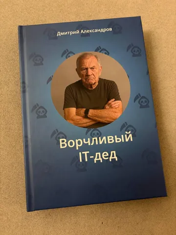
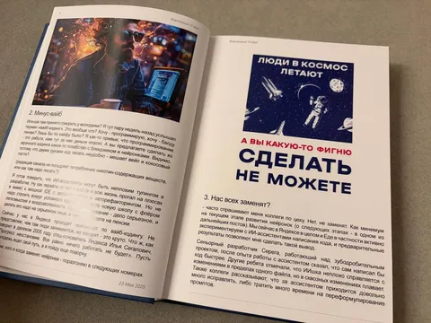
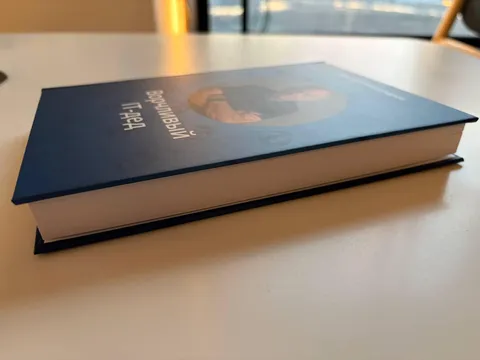

Этот канал довольно много для меня значит. В него я вложил много сил и времени. В какой-то степени - это слепок моего сознания в сезоне 2025-2026. И в какой-то момент возникла мысль этот контент сохранить на память. Еще до момента, когда доступность телеграма стала вызывать опасения, я решил напечатать небольшим тиражом книгу. Нет, я вовсе не считаю себя писателем. Не берусь судить о ценности как мыслей, так и их подачи, но это какая-то часть меня, которая теперь есть и на бумаге.
Хочется поблагодарить издательство (типографию) за отличную работу и терпение в работе над замечаниями, а также мою жену, которая это все организовала и заменеджила. В начале работы над макетом дизайнер типографии хотел оформить тексты в стиле тг-постов. На что заказчик (я) попросил скорее обратное - "давайте представим, что это не вы делаете верстку книги по тг-постам, а я последний год писал книгу, но зачем-то отправлял ее фрагменты в тг-канал". Это, конечно, шутка, но в каждой шутке...
Как бы то ни было, теперь у меня несть пара десятков экземпляров книги "Ворчливый IT-дед" с содержимым этого канала с 23 мая 2025 по 12 марта 2026. И частью тиража я готов поделиться с вами, если вы почему-то решили, что вам нужны эти 250 страниц "мудрости" - пишите в личку или комменты. Просто на память. А лучшая благодарность для меня - это если вы порекомендуете этот канал своим друзьям и коллегам.


